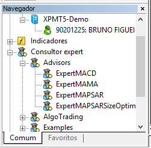
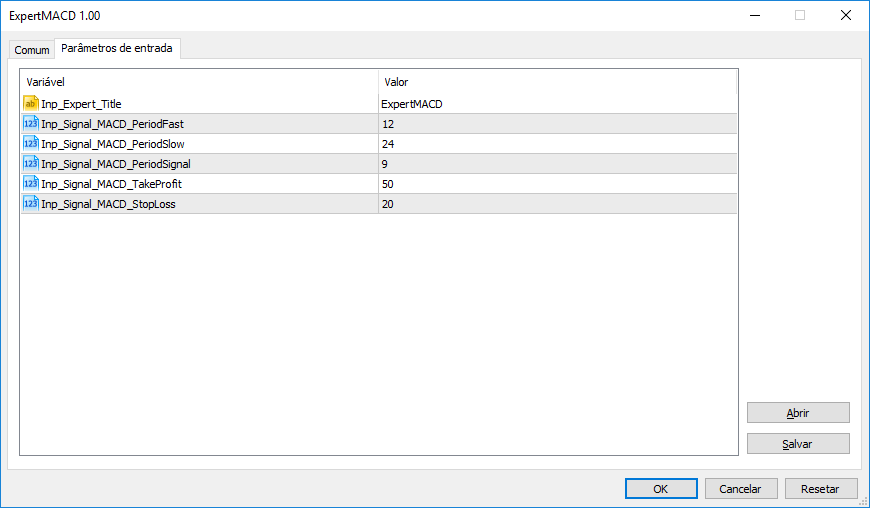

Instalando robôs no MetaTrader 5
Instalação de robôs no MT5
Agora que já entendemos o que é o MetaTrader, como instalar a plataforma e como fazer algumas configurações iniciais, chegou a hora de seguir instalando robôs no MetaTrader. Primeiramente vamos mostrar alguns robôs que já estão disponíveis no MT5. Mas em seguida vamos ver 2 exemplos de robôs disponíveis na internet. Assim, mostraremos como fazer download e adicionar esses robôs no nosso ambiente.
Nos nossos exemplos vamos mostrar 2 robôs bastante conhecidos:
- Robô One 5, do Vilela
- Robô Turbo, disponibilizado pela AlgoTrading
Ambos são gratuitos para contas demo, onde é possível avaliar os robôs fazendo backtest, por exemplo.
Passo a passo – Robô já disponível no ambiente
Os robôs disponíveis no nosso ambiente podem ser vistos na janela “Navegação”. O robô “ExpertMACD”, por exemplo, já é disponibilizado na instalação do MetaTrader 5 e por isso pode ser adicionado com facilidade.

- Primeiramente abrir o gráfico do ativo que o robô irá operar (ex.: PETR3).
- Em seguida clicar sobre o robô na janela “Navegação” e arrastar o mesmo para o gráfico.
Assim, será aberta a janela de configuração do Robô, com os parâmetros de entrada (caso o mesmo possua). Além disso, existe a possibilidade de habilitar ou não a negociação para este robô/ativo especificamente.

Depois disso, caso a Negociação Automatizada do sistema como um todo esteja habilitada e o robô/ativo tenha a marcação indicada no última passo acima, o robô estará executando.
Passo a passo – Robô baixado da internet
Considerando os robôs indicados no início deste artigo, basta fazer o download nos links associados. Para que os robôs fiquem disponíveis na plataforma, seguir as orientações abaixo:
Inicialmente abrir a pasta de dados do MetaTrader 5 na opção de menu “Arquivo” -> “Abrir Pasta de Dados”.
Na sequência, copiar o arquivo “*.ex5” e colar nesta pasta.
Para que ele aparece na janela “Navegador”, clique com o botão direito sobre “Consultor expert” e escolha a opção “Atualizar”.
A partir daí, basta seguir o primeiro passo a passo do post.
No vídeo abaixo mostramos todo esse passo a passo com muito mais detalhes. Não deixe de se inscrever no canal, curtir o vídeo e comentar que tipo de conteúdo você acha interessante, relacionado a MetaTrader.